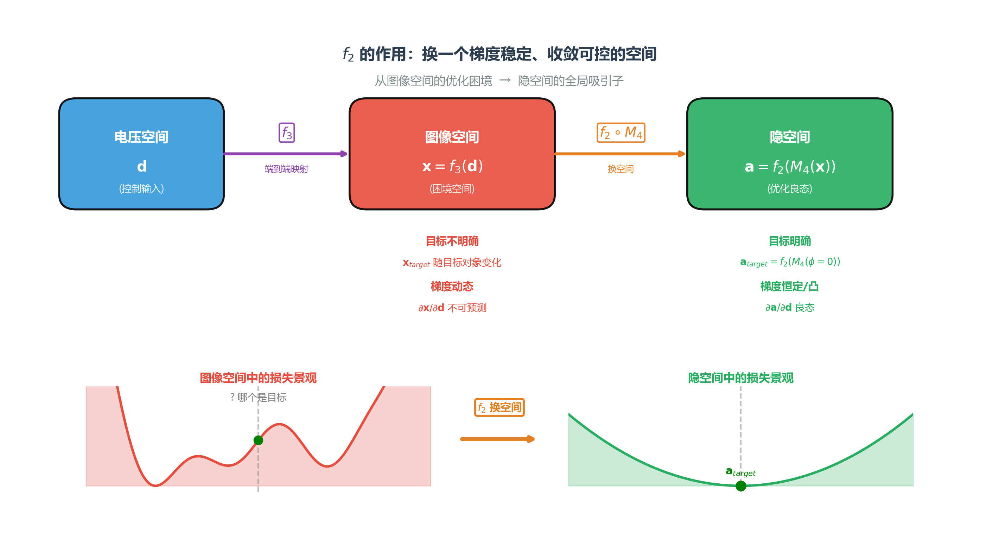
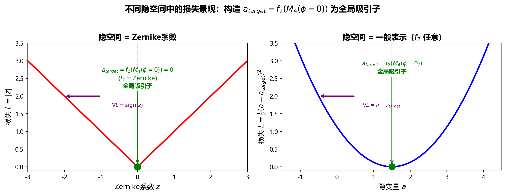

1. 自适应光学：波前的梯度下降优化
从优化视角：将AO控制重新表述为Zernike空间中的梯度下降问题。这种视角不仅简化理解，更为现代AO算法设计（机器学习、预测控制）提供理论基础。
1.1. 核心映射：电压 → Zernike系数
1.2. 定义控制问题
自适应光学的核心控制问题可以表述为：寻找最优的变形镜驱动电压 d，使得波前误差（以Zernike系数度量）最小化：
dminL(d)=21∥z∥2=21∥f(d)∥2
其中系统响应函数为：
z=f(d)
| 符号 |
含义 |
维度 |
| d |
变形镜驱动电压 |
Nact |
| z |
波前Zernike系数（残余误差） |
Nzern |
| f(⋅) |
系统响应函数（含光学、机械、传感器） |
映射函数 |
物理意义：施加电压 d，系统输出波前，投影到Zernike基得到系数 z。控制目标是通过选择合适的 d，使残余波前 z→0。
1.3. 为什么测量了传函之后，就能优化？
线性假设与雅可比矩阵
z≈J⋅d+z0
Jij=∂dj∂zi≈const
这是AO系统的核心工程假设：
- 压电陶瓷工作在线性区（小迟滞）
- 变形镜表面应力不变（小形变）
- 光学路径固定（共轭稳定）
这些系统本质上都是基于梯度的优化，差别只在于如何获取梯度：
| 特性 |
神经网络训练 |
AO闭环控制 |
SPGD迭代 |
| 梯度获取 |
每步反向传播重新计算 ∇θL |
固定使用预标定的 J |
随机扰动采样估计 |
| 梯度变化 |
允许任意变化（非凸、多峰） |
假设恒定（线性时不变） |
每步重新随机估计 |
| 更新目标 |
寻找全局/局部最优 |
实时跟踪动态扰动（湍流） |
实时优化像质指标 |
| 时间尺度 |
分钟到小时（离线） |
毫秒（在线，kHz） |
毫秒~百毫秒 |
三者都是沿梯度方向迭代，但获取梯度的方式截然不同：神经网络通过反向传播解析计算，AO系统依赖预标定的物理模型，SPGD则通过随机扰动在像质指标上直接采样估计。
2. 无信标自适应光学的数学优化框架：从 f3 的困境到 f2 的构造
传统AO有波前传感器直接测量波前，控制问题可表述为：
z=f1(d),dmin∥ztarget−f1(d)∥2=dmin∥z∥2
其中目标波前 ztarget=0。由于 f1 在小信号下近似线性，响应矩阵 J=∂z/∂d 恒定且可预标定，优化良态。
无信标场景没有波前传感器，只能获得强度图像 x。若直接端到端优化：
x=f3(d),dmin∥xtarget−f3(d)∥2=dmin∥xtarget−x∥2
2.1. f3 的本质困难
端到端映射 f3:d→x 定义了电压空间到图像空间的嵌入。理论上可优化：
dmin∥xtarget−f3(d)∥2
但这面临两个根本性困难：
困难一：目标不明确
完美像质对应的图像 xtarget=f3(d∗) 取决于未知的理想电压 d∗。对于不同的扩展目标（点源、扩展源、不同光谱），xtarget 各不相同。图像空间中没有普适的"零状态"来定义优化目标——不像波前空间有 ztarget=0 这样明确且与目标无关的物理基准。
困难二：梯度动态
即使假设 xtarget 已知，有效梯度：
∇dL=(∂d∂x)T∇xL
中的响应矩阵 J3=∂x/∂d 仍随当前像差状态（相位缠绕、散斑干涉）剧烈变化，无法像传统AO那样预标定全局传递函数。
2.2. 数学建模：f2 作为控制相容的表示变换

2.2.1. 1. 统一框架：引入表示映射 f2
核心思想：直接在图像空间优化不可行，必须寻找一个新的隐空间。
在图像空间中，控制问题写作：
x=f3(d),dmin∥xtarget−x∥2
正如上一节所分析的，图像空间 x 不是一个好的优化空间——它同时受困于"目标不明确"和"梯度动态"两个困难。
因此，我们需要引入一个表示映射 f2，将图像 x 变换到一个新的中间空间 a∈A：
a=f2(x)=f2(f3(d))
在这个新的隐空间中，优化问题变为：
dmin∥atarget−a(d)∥2
f2 的引入正是为了解决 f3 的两个困难，因此对隐空间中的映射 a(d) 提出两点要求：
要求一：目标明确
隐空间 A 必须存在先验已知的理想状态 atarget，使得闭环目标可明确写出。
要求二：梯度可控
a(d) 关于 d 的优化必须是良态的。至少满足以下之一：
- ∂a/∂d≈J（常数矩阵），可直接固定梯度下降
- 标量 ∥atarget−a(d)∥2 局部严格凸，允许无导数优化
2.2.2. 2. 两种策略作为 f2 的特例
同一抽象框架下，f2 的具体实现可以走两条不同路径：
2.2.2.1. 策略A：表示变换-线性化（神经网络方法）
选择 f2 使得复合映射 F(d) 近似仿射：
F(d)=f2(f3(d))≈J⋅d+a0
神经网络波前重构正是这一策略：
- f2(x;θ) 用神经网络从图像推理波前：a=zest∈RNzern
- 复合映射近似为 F(d)≈Jd+z0
- 闭环继承传统AO的固定梯度 J，可用单次牛顿步收敛
此时 f2 实现了从图像空间到波前空间的"降维线性化"——原本在 X 中高度非均匀的黎曼结构，被拉平为 A 中的近似欧氏结构。
2.2.2.2. 策略B：指标变换-凸化（迭代/SPGD方法）
选择 f2 输出标量像质指标：
f2(x)=I(x)∈R,I(x)=max(x) 或 ∑∣∇x∣2
这一策略的精髓是绕过"目标不明确"的困难：不再追问"完美图像长什么样"，而是直接优化一个可计算的标量指标，假设"越亮越好"或"越锐利越好"。
但困难二（梯度动态）并未消失——ϕ(d)=I(f3(d)) 关于 d 的梯度仍然依赖于动态的 ∂x/∂d。SPGD 的做法是不预标定梯度，而是每次在线随机扰动估计：
dk+1=dk−γ⋅Δϕ⋅Δd
其期望方向近似于真实负梯度。这是无导数优化，不需求梯度恒定——代价是收敛慢、需在线反复扰动。
2.2.3. 3. 扩展目标的不变性：目标无关特征与隐空间构建
M4=∣Hin∣2+∣Hdef∣2∣Hin∣2−∣Hdef∣2
关键结论：M4 只依赖于光学传递函数 H（即像差 ϕ），而与观测目标 O 完全无关。这意味着：
- 对任意扩展目标，完美像质（ϕ=0）对应的 M4 值是唯一的、先验已知的
- M4 空间中不存在"不同目标有不同零状态"的歧义
因此，如果在 f2 之前先引入去目标映射 M4，整个控制架构变为：
a=f2(M4(f3(d)))=(f2∘M4∘f3)(d)
其中 m=M4(x) 已经与目标解耦。此时无论 f2 选择为神经网络、多项式拟合还是其他函数，其输入 m 都具有目标不变性。优化目标因此是唯一且明确的：
atarget=f2(M4(ϕ=0))
由于 M4 与像差一一对应（满足可区分性），闭环只要收敛到 atarget，就必然意味着 ϕ=0——f2 的具体形式无关紧要：无论它输出的是 Zernike 系数、数据驱动的隐变量还是其他任意表示，优化到 atarget 就精确等价于完全校正了像差。
2.2.4. 4. 能否学习其他隐变量？
在去目标化框架下，atarget=f2(M4(ϕ=0)) 也唯一确定。
但目标的明确性只是第一步。真正关键的问题转变为：如何确定 f2 的形式，才能使变形镜在物理光路中更容易优化到 atarget？ 不同的 f2 选择会直接决定从电压 d 到隐变量 a 的优化曲面——梯度是否恒定、收敛是否快速、是否陷入局部极小——这些都取决于 f2 的构造。
这引发一个自然的问题：f2 的输出 a 是否必须是 Zernike 系数？
优化视角的回答：不必是 Zernike。只要满足三条条件（单调保序、可区分、梯度可达），任何从 m 到 a 的映射都可以作为有效的隐变量。
下图直观展示了这一思想：左图中隐变量是 Zernike 系数，ztarget=0 是全局吸引子；右图中隐变量是一般表示 a，atarget 同样是全局吸引子。两者损失景观形状不同，但都有唯一谷底——这意味着 f2 的选择不改变"存在唯一最优解"这一根本性质，只改变到达最优解的路径难易程度。

Zernike 系数 z 之所以成为自然选择，并非数学唯一性，而是物理适配性：
| 优势 |
说明 |
| 与 f1 兼容 |
变形镜的机械响应主要耦合低阶形变，∂z/∂d=J 近似恒定 |
| 目标物理明确 |
ztarget=0 对应完美平面波，无需额外标定 |
这揭示了一个更为深刻的事实：在去目标化框架下，f2 的输出 a 完全可以是没有任何物理意义的抽象数学表示——它不需要对应波前、相位或任何可解释的光学量，甚至可以是神经网络内部某个不可名状的压缩特征。隐变量的合法性不再来源于"物理可解释性"，而唯一来源于数学优化条件：只要 a(d) 满足单调保序、可区分和梯度可达，闭环一旦收敛到 atarget=f2(M4(ϕ=0))，就必然意味着像差被完全校正。
3. Gumbel function
3.1. The probability density function（概率密度函数）
The probability density function (PDF) of gumbel distribution is,
f(x,μ,β)=e−z−e−z,z=βx−μ,
where μ is the position index and the mode （众数）and β is the scale
index. The variance of gumbel distribution is 6π2β2.
3.2. The Cumulative density function （累计密度函数）
The cumulative density function (CDF) of gumbel distribution is,
F(x,μ,β)=e−e−(x−μ)/β
CDF’s inverse function is,
F−1(y,μ,β)=μ−βln(−ln(y))
4. KL (Kullback-Leibler) Divergence
4.1. Some Concepts
It can be thought of as an alternative way of expressing probability, much like
odds or log-odds, but which has particular mathematical advantages in setting of
information theory. It can be interpreted as quantifying the level of ‘surprise’
of a particular outcome. As it is such a basic quantify, it also appears in
several other settings, such as the length of a message needed to transmit the
event given an optimal source coding of random variable.
4.1.1.1. Two Axiom
- A thing which more likely to happen contains less information. The thing
definitely happen contains no information.
- Two things happen independently contains the information which is the sum of
their information.
Thus the Self-Information is defined as
I(x)=−logP(x)=logP(x)1
4.2. Entropy
The Expectation of Self-Information
H(P)=x∑P(x)log(P(x)1)
4.3. Cross-Entropy
HP(Q)=x∑Q(x)log(P(x)1)
4.4. KL Divergence
DP(Q)=KL(Q∣∣P)=HP(Q)−H(Q)=x∑Q(x)log(P(x)1)−x∑Q(x)log(Q(x)1)=x∑Q(x)log(P(x)Q(x))
If Q is known and P is learn-able, argmin(DP(Q))=argmin(HP(Q)).
For more read the book Deep Learning page 47.
5. Balance Multitask Training
5.1. 论文中有的方法
Task Learning Using Uncertainty to Weigh Losses for Scene Geometry and Semantics
Multi-Task Learning as Multi-Objective Optimization
Multi-Task Learning Using Uncertainty to Weigh Losses for Scene Geometry and
Semantics
Bounding Box Regression with Uncertainty for Accurate Object Detection
这些论文主要是一种不确定性的方法，从预测不确定性的角度引入 Bayesian 框架，根据各
个 loss 分量当前的大小自动设定其权重。
5.2. 利用 Focal loss
Dynamic Task Prioritization for Multitask Learning
这里主要想讲的是利用 focal loss 的方法，比较简单。
每个 task 都有一个 loss 函数和 KPI (key performance indicator)。KPI 其实就是任务
的准确率，kpi 越高说明这个任务完成得越好。
对于每个进来的 batch，每个Taski 有个 lossi。每个 Task i 还有个不同的
KPI:ki。那根据 Focal loss 的定义
，FL(ki,γi)=−(1−ki)γi∗log(ki)。一般来说我们 γ
取 2。
最后 loss=∑(FL(ki,γi)∗lossi)，loss 前面乘以得这个系数 FL，就是
一个自适应的权重，当任务完成得很好的时候，权重就比较小，不怎么优化这个 loss 了，
当任务完成得不好的时候，权重就会比较大。